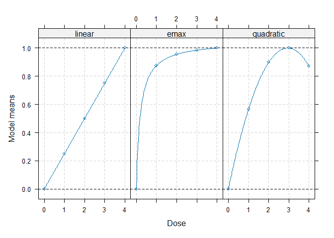
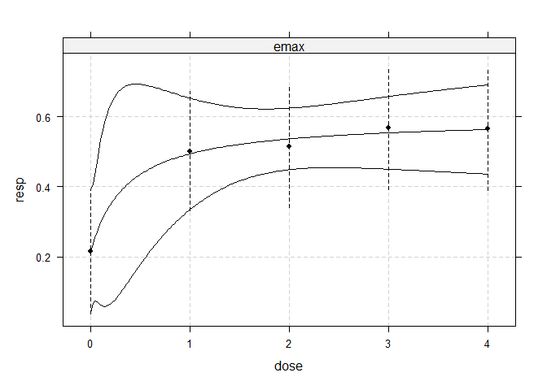
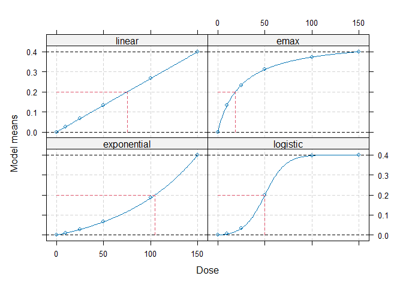

The DoseFinding package provides functions for the design and analysis of dose-finding experiments (for example pharmaceutical Phase II clinical trials). It provides functions for: multiple contrast tests, fitting non-linear dose-response models, a combination of testing and dose-response modelling and calculating optimal designs, both for normal and general response variable.
Installation
You can install the development version of DoseFinding from GitHub with:
# install.packages("devtools")
devtools::install_github("bbnkmp/DoseFinding")Examples
Performing multiple contrast tests
library(DoseFinding)
data(IBScovars)
## set random seed to ensure reproducible adj. p-values for multiple contrast test
set.seed(12)
## perform (model based) multiple contrast test
## define candidate dose-response shapes
models <- Mods(linear = NULL, emax = 0.2, quadratic = -0.17,
doses = c(0, 1, 2, 3, 4))
## plot models
plot(models)
## perform multiple contrast test
MCTtest(dose, resp, IBScovars, models=models,
addCovars = ~ gender)
#> Multiple Contrast Test
#>
#> Contrasts:
#> linear emax quadratic
#> 0 -0.616 -0.889 -0.815
#> 1 -0.338 0.135 -0.140
#> 2 0.002 0.226 0.294
#> 3 0.315 0.252 0.407
#> 4 0.638 0.276 0.254
#>
#> Contrast Correlation:
#> linear emax quadratic
#> linear 1.000 0.768 0.843
#> emax 0.768 1.000 0.948
#> quadratic 0.843 0.948 1.000
#>
#> Multiple Contrast Test:
#> t-Stat adj-p
#> emax 3.208 0.00128
#> quadratic 3.083 0.00228
#> linear 2.640 0.00848Fitting non-linear dose-response model
## fit non-linear emax dose-response model
fitemax <- fitMod(dose, resp, data=IBScovars, model="emax",
bnds = c(0.01,5))
## display fitted dose-effect curve
plot(fitemax, CI=TRUE, plotData="meansCI")
Optimal designs for dose estimation
## Calculate optimal designs for target dose (TD) estimation
doses <- c(0, 10, 25, 50, 100, 150)
fmodels <- Mods(linear = NULL, emax = 25, exponential = 85,
logistic = c(50, 10.8811),
doses = doses, placEff=0, maxEff=0.4)
plot(fmodels, plotTD = TRUE, Delta = 0.2)